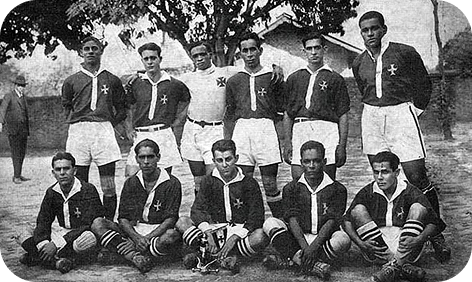
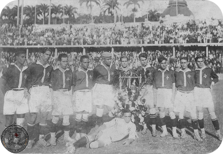

O Club de Regatas Vasco da Gama é um dos clubes mais tradicionais do Brasil,
fundado em 21 de agosto de 1898 por remadores no Rio de Janeiro.
Inicialmente, o foco era o remo, onde o clube se destacou e conquistou diversos títulos.

A entrada do Vasco no futebol, em 1915, foi um marco. Diferente dos clubes elitistas da época,
o Vasco aceitou jogadores negros e operários, o que causou grande polêmica. Em 1923, a equipe,
formada por atletas das classes populares, foi campeã carioca, mas foi impedida de participar da liga principal no ano seguinte.

A resposta do clube foi a famosa "Resposta Histórica" de 1924,
uma carta em que o Vasco se recusava a excluir seus jogadores e defendia a igualdade.
Essa atitude corajosa fez com que o clube se tornasse um símbolo de luta contra o preconceito e um dos primeiros a promover a inclusão social no esporte brasileiro.